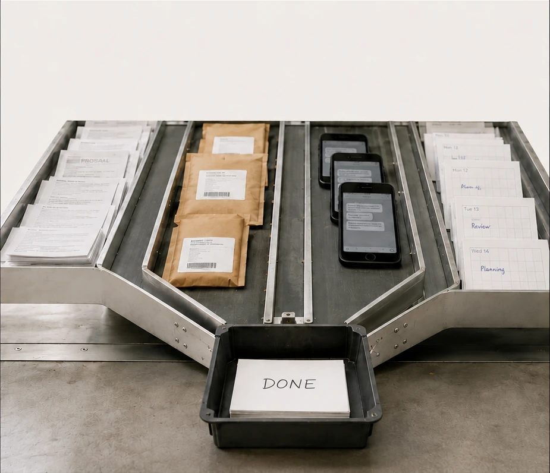
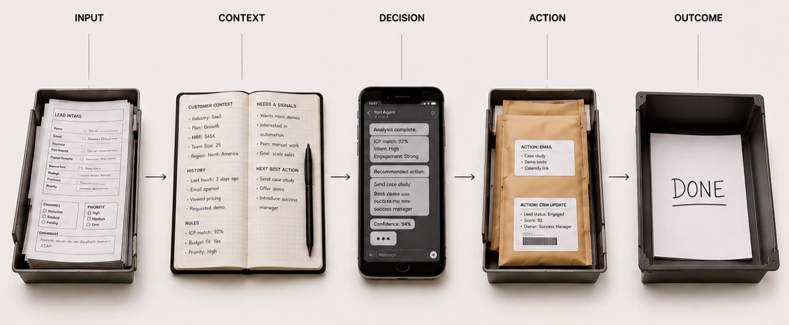
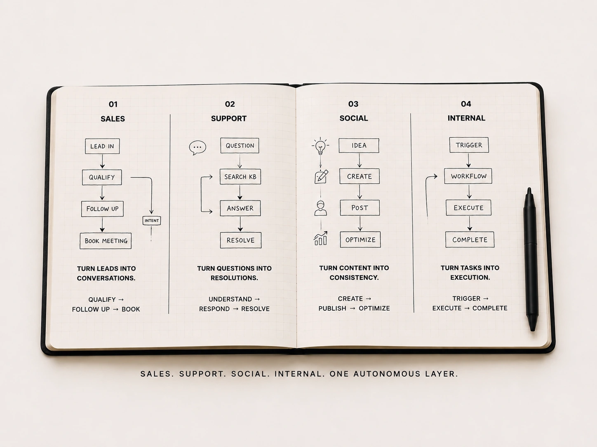
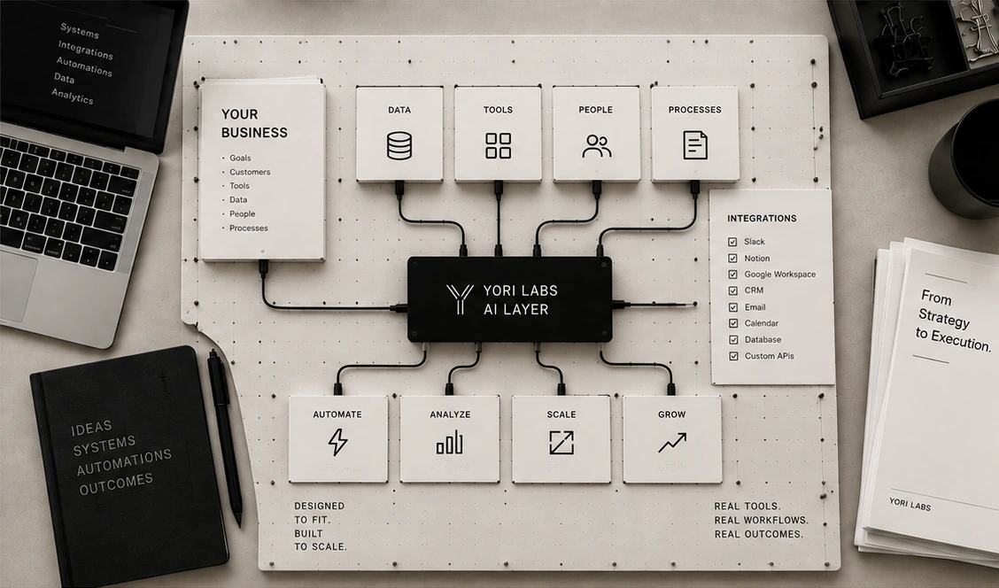
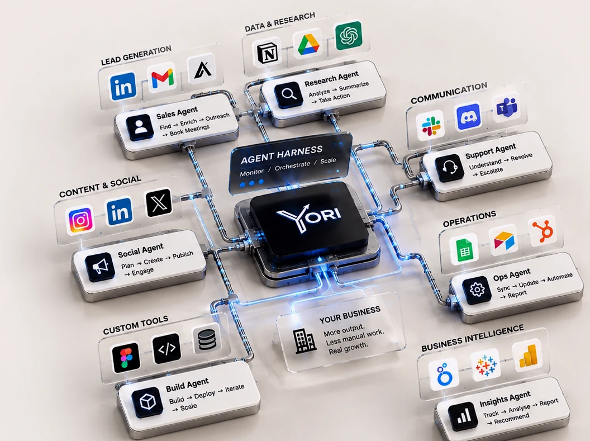

Turn operations into leverage.
Autonomous agents for sales, support,
social, and internal work.

From work to outcome.
Yori agents take in signals, understand the context, make decisions, and take action across your business, delivering real outcomes.
See it in action ↗
Leads, requests,
emails, tickets,
messages.
Customer data,
business rules,
history, signals.
AI agents reason
and determine
the best next step.
Replies, calls,
updates, posts,
workflows.
Resolved, booked,
published, delivered.
Real impact.
Four chapters. One operation.
Sales, support, social and internal work run on one stack. Drawn once, then built to run without you.
Every flow,
end to end.
Four systems, one pattern: a signal arrives, the agent decides, it acts, the work closes.
- 01SalesLead in → Qualify → Follow up → Book meeting
- 02SupportQuestion → Search KB → Answer → Resolve
- 03SocialIdea → Create → Post → Optimize
- 04InternalTrigger → Workflow → Execute → Complete

Built around your business.
No two businesses run the same way.
We design AI systems around your
tools, data, people and processes.
- 01 Products Custom apps & AI products.
- 02 Dashboards Business intelligence & control.
- 03 Integrations AI inside your existing stack.
- 04 Workflows Custom automation from end to end.

A brain that remembers.
You learn. You create. You have ideas.
But you can’t remember everything.
We build your second brain, so nothing important
is ever lost, and you can do more, think clearer and
move faster.
We don’t just build systems. We build products.
From trading to travel, communication to
business intelligence: real products, built with AI,
used by people, solving real problems.
- Ideas
- Products
- People
- Impact
- Site Mirror Website cloner
- BidYori Trading
- Linkliteral Translation
- YoriTrip Travel
-
Yori Agentic
Dashboard Business
Real outcomes
From ideas to Real impact.
Let’s build, automate, and scale
what’s next, together.

- Businesses
- Agents
- Automations
- Real outcomes